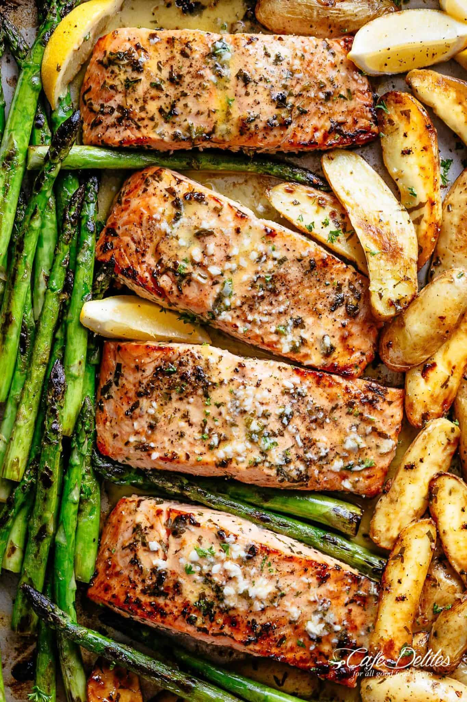

Garlic Butter Smoked Salmon

tender garlic butter baked salmon with crispy roast potatoes, asparagus and a delicious garlic butter sauce! all baked on a sheet pan for an easy dinner.
THE salmon recipe of your dreams! A complete meal on one pan full of flavour. Garlic Butter Baked Salmon is easy to make using minimal ingredients you already have in your kitchen! PLUS the bonus of having only one pan to wash and no mess in your kitchen to clean up when your done
Ingredients
- 1 pound fingerling potatoes
- 2 tablespoon olive oil
- 1/2 teaspoon salt
- 1/2 teaspoon ground black pepper
- 4 skinless salmon fillets
- 2 tablespoons minced garlic
Steps
- Preheat oven to 400 degrees F (200 degrees C). Line a baking sheet with a piece of aluminum foil, and spray with nonstick cooking spray.
- Place the potatoes into a saucepan, and fill with enough water to cover. Bring to a boil, and cook for about 10 minutes, or until easily pierced with a fork. Drain, and set aside.
- Combine 1/4 cup of lemon juice and 1/4 cup of the melted butter together and pour the mixture over the salmon and asparagus. Season everything with the remaining salt and pepper.